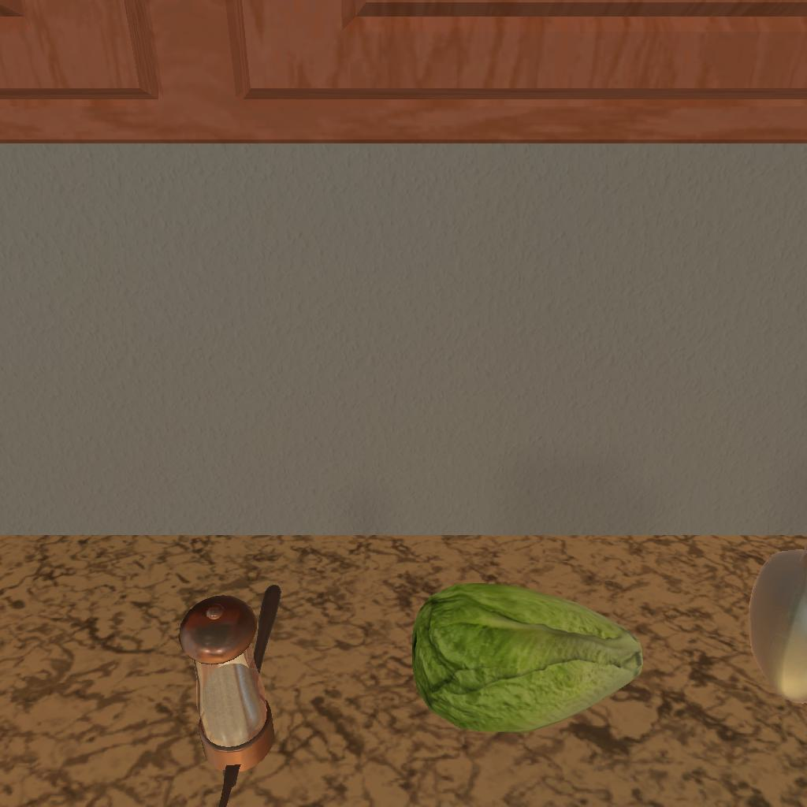

---------------------------------------------------------task: 23---------------------------------------------------------
--------------------------------------------------------------------------------------------------------------------------------------------------------------------
--------------------------------------------------------------------------------------------------------------------------------------------------------------------
Step:--------------------------------------------------------------------------18-------------------------------------------------------------------------------
----------------------------------------
VLM Prompt:
Image1:
Image2:
**Instruction**
1. Analyze the provided images to identify all visible household objects and compare the difference between images (e.h. whether the object is opened or not and taken on hand or not), focusing on those relevant to the task description "put a hot mug in coffeemachine."
2. Use the analysis of images and the task hint "The agent must find an object of the desired type, pick it up, go to a microwave, heat the object with the microwave, then find the correct location to place it, and put it down there. The agent does not need to use the microwave button or open the microwave to heat the object, and the agent just needs to do action that is "heat the object with the microwave"." to answer the question: what is the most reasonable action in the choices for the task description "put a hot mug in coffeemachine"?
3. Decide and write the answer using the template: The answer is: (i): , where i is the real number. If there is no desired object in images, search every place based on **Initial Observation** to find the object. And if no one is exactly correct, choose a similar answer.
**Initial Observation**
You are in the middle of a room. Looking quickly around you, you can see cabinet (1-15), fridge (1), countertop (1-4), drawer (1-4), microwave (1), toaster (1), coffeemachine (1), garbagecan (1), sink (1), stoveburner (1-3), sinkbasin (1)
**Answer Choices**
(1): go to cabinet 2
(2): go to cabinet 3
(3): go to fridge 1
(4): go to cabinet 4
(5): go to cabinet 5
(6): go to cabinet 6
(7): go to cabinet 7
(8): go to drawer 1
(9): go to drawer 2
(10): go to cabinet 8
(11): go to drawer 3
(12): go to cabinet 9
(13): go to cabinet 10
(14): go to drawer 4
(15): go to microwave 1
(16): go to cabinet 11
(17): go to toaster 1
(18): go to cabinet 12
(19): go to cabinet 13
(20): go to cabinet 14
(21): go to cabinet 15
(22): go to countertop 2
(23): go to coffeemachine 1
(24): go to garbagecan 1
(25): go to countertop 3
(26): go to countertop 4
(27): go to sink 1
(28): go to stoveburner 1
(29): go to stoveburner 2
(30): go to stoveburner 3
(31): go to sinkbasin 1
(32): open cabinet 1
(33): close cabinet 1
(34): examine cabinet 1
**Answer**
Let's think step by step by following the instructions.
----------------------------------------
----------------------------------------
Original Response:
Image 1 shows a countertop with a pepper shaker and a piece of lettuce. Image 2 is an image of a closed cabinet (cabinet 1).
Since the task is to "put a hot mug in coffeemachine," we need to first find a mug. Neither of the provided images show a mug, so we need to search other places based on the **Initial Observation**.
Given the hint, "The agent must find an object of the desired type, pick it up, go to a microwave, heat the object with the microwave," we should look for the mug first, then the microwave. Since mugs are usually kept in cabinets or on countertops near coffeemachines, we should check these locations.
However, the images do not show the inside of the cabinets or the full view of the countertops. Therefore, we need to search for the mug in the cabinets near the coffeemachine.
Since cabinet 1 is already closed (as seen in image 2), and the task mentions a microwave which is also not visible in the images, it is most likely that the mug is in a different cabinet near the coffeemachine and microwave.
The answer is: (23): go to coffeemachine 1 to check for the mug on the countertop near it, and if not found, then proceed to search the nearby cabinets and use the microwave as instructed.
----------------------------------------
----------------------------------------
>>> Refine Original VLM Response and Get Pure Action: go to coffeemachine 1 to check for the mug on the countertop near it, and if not found, then proceed to search the nearby cabinets and use the microwave as instructed
----------------------------------------
-----------------------------------------------------------------
Running time: 11.002103567123413 seconds
Total Money: 12.029420000000002
-----------------------------------------------------------------
-----------------------------------------------------------------
Text Observation:Nothing happens.
-----------------------------------------------------------------
UNSUCCEED